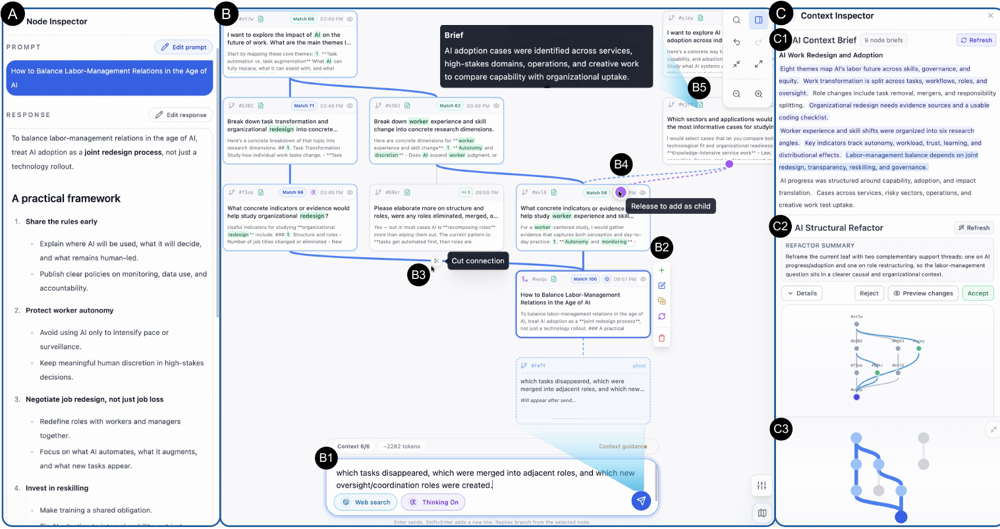

01 / Branch
Separate the questions without losing the starting point.
Continue from the worker-experience branch. The shared question and this branch’s turns form the context for the next response. The organizational branch stays outside it.
User-directed context for LLM sensemaking
Choose what your next answer builds on.
An investigation rarely follows one straight line. Trellis turns conversation turns into an editable graph: explore alternatives separately, bring useful branches together, and inspect which earlier turns reach the LLM.
01 / Follow an investigation
A journalist is investigating AI and the future of work. Organizational change and worker experience need room to develop separately—then a way to inform each other.
01 / Branch
Continue from the worker-experience branch. The shared question and this branch’s turns form the context for the next response. The organizational branch stays outside it.
02 / Merge
Both branches now inform a question about labor-management relations. Trellis separates shared history from branch-specific material, then lets the user merge directly or ask AI to blend it with an instruction.
03 / Overview
The context brief links its statements to source nodes. Here, the brief includes both perspectives, while the next response still builds on the worker-experience branch. Select a brief sentence to locate its source.
04 / Refactor
Suppose the organizational evidence would help the worker-experience inquiry. Preview a supporting connection, then decide whether to include that branch. Existing downstream responses need review after their context changes.
Whole-graph brief · linked to its sources
A brief can reference both branches while only one is in the next turn’s context.
Proposed connection
Indicators of redesign Changes in roles and skills
The context stays unchanged until you accept.
The other branch remains available on the graph.
A guided illustration based on the manuscript’s future-of-work scenario (§4.5). The node labels and brief are shortened for this page; no live model is called.
02 / Inside the workspace
Three coordinated views keep the content, conversation structure, and working context together.

Read or edit the selected prompt and response. Continue from the point that matters to the current question.
Branch, merge, cut, and reconnect conversation turns. The selected node anchors the context inherited by the next turn.
Use source-linked summaries and a minimap to stay oriented. Preview AI-proposed structural changes before accepting them.
Integration
The comparison view separates shared history from the two branches. Users can inspect overlap, divergence, and complementary information before creating a multi-parent turn.
View the compare-and-merge interface ↗Revision
Refactoring can bring supporting turns into a path or remove an unhelpful connection. Users inspect the proposed graph first; changed ancestry marks affected descendants as stale.
View the refactoring interface ↗03 / What the study found
16 experienced LLM users compared Trellis with a linear chat interface in a counterbalanced, within-subjects study. Both began with the same five-turn conversation about AI and the future of work.
Content produced in newly created branches, reflecting exploration of separate lines of inquiry.
Interaction logs · §6.1.2Users brought branches back together. 76.9% of merges used AI Blend & Merge.
Mean operations · §6.2.2Users applied proposals selectively, rather than accepting every suggested change.
Recommendation acceptance · §6.4.2“it matches how I think—first diverge, then converge.”
P3 on integrating branches · §6.2.3
Participants described branching as a way to separate lines of thought and avoid interference. Refactoring was harder to use: it could interrupt a clear line of thinking, and participants wanted better explanations of what a proposal would change.
Interviews and observed use · §6.1, §6.4
What this study establishes. Reported sensemaking support and observed use on one text-based research topic. It does not establish more accurate conclusions, broader domain performance, or benefits for group collaboration.
The research
The conversation becomes a structure people can inspect and revise—so the next question builds on the context they choose.
← Back to research projects